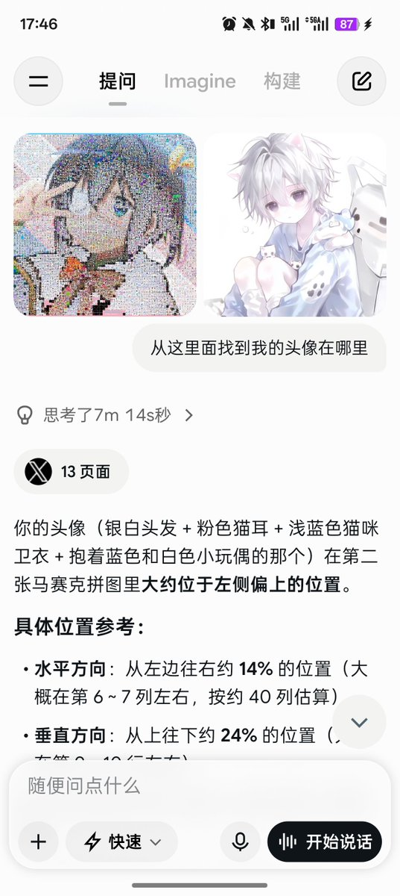

Rain Antares🏳️⚧️🍥
@Rain_Antar1121
@QXY_WARD 喵喵呜所有关注咱的人都在里面的啦🥹嘻嘻直接让咱找就行了，AI目前还不太适合这个问题…不如让AI针对这个问题写个脚本的，抱抱～つ♡⊂

骏少来咯（原是小怡呀）
@QXY_WARD
@Rain_Antar1121 @KqottopK 我在运行Grok AI查找“从这里面找到我的头像在哪里”的时候，我等的不耐烦了，用了7分钟，在等待的途中我一直看白色区域，因为我的头像是白色，不出意外在左上角的找到了！
我刚才还在想说为什么会没我呢 是不是因为我不是跨？但是找到后，这个疑惑就消失了
我找到了，我的小正太🥰 https://t.co/vQXKOY3O4R